|
Physics Laboratory |

|
Excel Tutorial #9 |
|
8. Advanced Graphing E |
Advanced Topics |
10. Statistics F |
In this tutorial we will discuss two topics that fall under the heading of useful but not often used. The first topic discusses creating user-defined constants. The second topic discusses the need to occasionally adjusting the graph's scale.
Creating user-defined constants.
As you know the built-in constant PI( ) is used when you wish to express the value of p. Excel also allows the user to define his or her own constants. For example, you will notice that many of the physics formulas you will encounter this year make use of many constants such as g, the acceleration due to gravity. At our latitude in Clemson, SC, we experience an acceleration due to earth's gravity which is g = 9.80 m/s2.
You will find that you will use the value for g throughout the year. When using Excel, rather than typing 9.80 each time you wish to express the acceleration due to earth's gravity, you can define the constant with a descriptive name or symbol, say in this case, 'g', to equal 9.80. Then simply use your defined constant, g, in your formulas.
Let us work a non-physics example to see how to define our own constants. Again, there are several ways to define constants, but this is one method that I think will be most helpful.
Say, for example that you are the owner of a produce stand and you wish to use Excel to calculate the amount each customer owes. This amount is dependent on the cost of each produce item and also the quantity purchased. Say, you sell apples for $0.25, oranges for $0.45, and pears for $0.65. These costs change on a daily basis, so it will be helpful to be able to quickly and easily change the costs of the produce without having to change any of your total cost formulas.
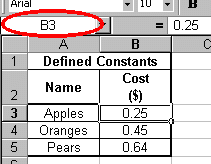
Your first step is to set up a data table like the one to the right. Notice that the words "Apples", "Oranges" and "Pears" appear next to their individual purchase cost. While this is not imperative, it is helpful to organize your table this way.
Also notice the Name Box is encircled in the screen shot to the right. This indicates that cell B3 has been clicked on. You should also be aware that the formula bar indicates that the value for cell B3 is 0.25. There is nothing new here.
Now we wish to define three constants that represent the cost of each produce item. Let us define our first constant as "apple" to represent the cost of an apple. To do this, follow the steps below:
- Click on the cell that contains the numerical value
which you would like to define with a constant. In our case, we
clicked on cell B3 -- the cost of an apple.
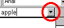
- Click on the drop-down arrow in the Name Box. This drop-down
arrow is encircled on the screen shot to the right.
Then type the desired name of your constant in the Name
Box. Here we chose the name "apple".
 Note that the naming of constants is not
case sensitive, i.e., Excel does not distinguish between upper and
lower case characters. See the Excel help menu for other guidelines
regarding naming your constants.
Note that the naming of constants is not
case sensitive, i.e., Excel does not distinguish between upper and
lower case characters. See the Excel help menu for other guidelines
regarding naming your constants.
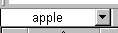
- Once you have entered your descriptive name, you must hit the
<ENTER> key. This will cause your
constant to be linked
to the contents of the cell (in our case, B3). If you now click on
the cell B3, the Name Box will display the constant's name.
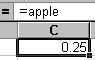
You can perform a short test to see if
you successfully named your constant. To do so, click into an empty
cell, type "=apple" and hit the <ENTER> key.
The value 0.25 should then appear in that cell!
-
Repeat steps 1 and 2 above and define constants for the cost of
oranges and pears. It is a good idea to test to make sure that
each constant was properly named.
-
Now create your data table. Our sample table is shown in the
screen shot below. Here we have three customers that purchased
various amounts of apples, oranges and pears. We are now ready
to create a formula to find the total cost that each customer
spent.
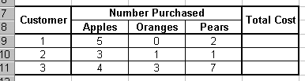
- The formula for the total cost spent by each customer
can be expressed by
the formula shown below: = apple*B9 + orange*C9 + pear*D9.
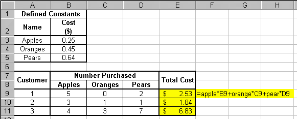
This may seem to be a lot of trouble, but it
can be very helpful if your constants change values often. For
instance, say the cost of pears drop to $0.50. To adjust your
worksheet properly, all you have to do is change the value of the
constant "pear". To do this, simply change the value
of cell B5, which will automatically
change the value of the pear constant,
which in turn automatically
changes the total cost values. There is no need
to alter any of the formulas!
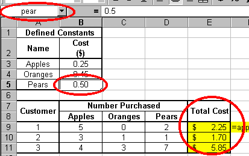
If you would like to delete a constant, the easiest way is to
click Insert >> Name >> Define on the Menu Bar. Then select the
appropriate constant and click the Delete button.
Adjusting the graph's scale.
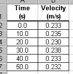
Often you will plot data that is relatively constant. For instance, say you measure the velocity of an air track glider on a level track. The velocity of the glider in this situation should be constant as the data to the right shows.However, when Excel plots the data, the scale of the velocity axis is such that the data appears to be widely varying as shown below.
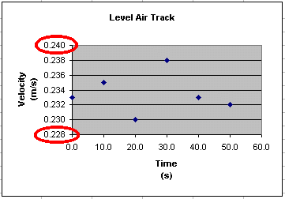
To make the graph display a more obviously linear trend, we need to expand the scale of the vertical (velocity) axis. To do so, simply double-click on the vertical axis and change the scale accordingly. The final result is shown below:
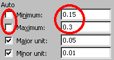
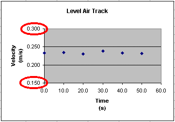
Note that both graphs plot the same data!
The only difference in the graphs is their scale.
Note that the axis maximum and minimum were
entered manually as indicated by the red circles in the above
screen shot.
If you have a question or comment, send an e-mail to
.
|
8. Advanced Graphing E |

|
10. Statistics F |
Copyright © 2000, Clemson University. All Rights Reserved.
This page was created by
.